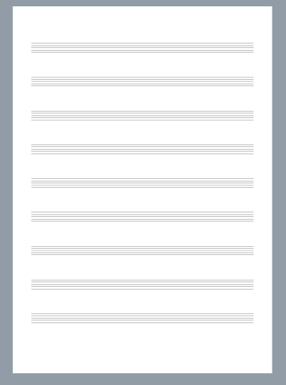

2.1. The Score element
In music, a music score is, basically, a collection of staves. When the score is intended to be performed by more than one person, each performer will usually have assigned one or more staves (a ‘score part’) with the music he/she has to perform. Each score part can be printed in a separate piece of sheet music, called a part, to play from. In short:
- The score is a collection of score parts.
- A score part is a set of staves for one instrument or performer.
In LDP the concept of ‘score part’ is named ‘instrument’ and a score is, basically, a collection of instruments and some optional information:
score ::= (scoreversion[defineStyle*] [title*] [pageLayout*] [systemLayout*] [option*] [parts]instrument+ )
The version element is just a number to indicate the LDP language version used to encode the score:
version ::= (vers string)
For example:
(score
(vers 2.0) //the score is encoded using LDP version 2.0
(instrument ...)
)
The optional parts element defines how the instruments are grouped for adding visual clues, such as:
- for grouping performers (i.e for grouping all string instruments)
- for sharing properties (i.e. common barlines)
parts ::= (partsinstrIds[group*] ) instrIds ::= (instrIds ID* ) group ::= (groupfirstInstrIdlastInstrId[name][abbrev][symbol] [joinBarlines] ) firstInstrId ::= ID lastInstrId ::= ID name ::= string abbrev ::= string symbol ::= (symbol {none | brace | bracket | line} ) joinBarlines ::= (joinBarlines {yes | no | mensurstrich } )
The instrIds element is just a list of all instruments ids in the score. The instrument IDs must
be listed in the same order in which they will be defined alter in the score.
Each group defines a set of one or more related instruments, sharing some visual properties: braces,
brackets, common barlines and additional printed names for the group. firstInstrId and lastInstrId
are just the IDs for the first and last instruments that will be part of the group (both inclusive). Notice that both
can refer to the same instrument and this can be used for adding additional names to the instrument or for adding
a brace or bracket to its staves. But this is not necessary for adding a brace to multi-staves instruments (i.e. piano)
as for multi-staves instruments their staves are automatically joined by a brace.
Element symbol refers to the symbol to be used for displaying
the group. Possible values are { none | brace | bracket }. If not
specified, ‘brace’ is assumed.
Element joinBarlines is for declaring that all the instruments in the
group must share the barlines. Possible values are { no | yes |
mensurstrich}. If not specified, ‘yes’ is assumed.
For example, the next LDP code is for a score with four parts: three voices (soprano, tenor and bass) and a piano part. The voices are grouped by a bracket and they will share all barlines. For the piano is not necessary to define and group as the two piano staves are automatically joined by a brace. For instance, the following code:
(score (vers 2.0)
(parts
(instrIds S1 T1 B1 P1)
(group S1 B1 (symbol bracket)(joinBarlines yes))
)
(instrument S1 (name "Soprano")(abbrev "S")(musicData))
(instrument T1 (name "Tenor")(abbrev "T")(musicData))
(instrument B1 (name "Bass")(abbrev "B")(musicData))
(instrument P1 (name "Piano")(abbrev "P")(staves 2)(musicData))
)
will be rendered as:

2.1.1. Score options
Global options are defined by using the option element:
option ::= (optoption_name[option_value] )
Depending on the option, its value must be an integer number, a float number or a boolean { yes | no | true | false }. Currently, the following options are available:
- Boolean options:
- StaffLines.StopAtFinalBarline
- StaffLines.Hide
- Staff.DrawLeftBarline
- Score.FillPageWithEmptyStaves
- Score.JustifyFinalBarline
- Integer number options:
- Staff.UpperLegerLines.Displacement
- Render.SpacingMethod (values: 1 = fixed spacing, 2 = proportional spacing)
- Render.SpacingValue
- Real number options:
- Render.SpacingFactor
For example, the following LDP code:
(score (vers 2.0)
(opt Score.FillPageWithEmptyStaves yes)
(opt StaffLines.StopAtFinalBarline no)
(instrument (musicData))
)
Will generate a blank page with staves (a manuscript paper page). It will be rendered as:
When no options are defined the following will be assumed:
(opt Score.FillPageWithEmptyStaves false )
(opt StaffLines.StopAtFinalBarline true )
(opt Score.JustifyFinalBarline false )
(opt StaffLines.Hide false )
(opt Staff.DrawLeftBarline true )
(opt Render.SpacingFactor 0.547 )
(opt Staff.UpperLegerLines.Displacement 0 )
(opt Render.SpacingMethod 2 ) //proportional spacing
(opt Render.SpacingValue 35 ) // 15 tenths (1.5 lines) [add 20 to desired value]
2.1.2. Units for measurements
LDP uses two types of units: absolute units and relative units.
Relative units in LDP are named ‘tenths’ and they refer to one tenth of staff interline space. These units are relative, as a score can have staves of different sizes. So ‘tenths’ units can only be used to specify measurements referred to an staff. They have a great advantage as changing the staff size will preserve the relative positions of all objects.
LDP uses ‘tenths’ for all measures, except in those rare cases in which no staff can be used as reference. In particular, all page margins and page width and height must be in absolute units. Absolute units are real world units, such as millimeters or inches. LDP uses as absolute unit one cent of a millimeter. Absolute units are only used when relative units can not be used
2.1.3. Page layout
The pageLayout element allows to define paper attributes, such as paper size, margins,
orientation, etc.
Important
pageLayout options are ignored when the score is embedded in a LMD document,
When embedded, page layout options are controlled by the document settings.
pageLayout ::= (pageLayoutpageSizepageMarginspageOrientation) pageSize ::= (pageSize width height) pageMargins ::= (pageMargins left top right bottom binding) pageOrientation ::= { portrait | landscape }
All page margins and page width and height must be in absolute units (one cent of a millimeter). See Units for measurements. For instance, if intended page size DIN A4 (210mm X 297mm) the pageSize element will be:
(pageSize 21000 29700)
By default, if no pageLayout element is defined, it will be assumed DIN A4 page size; portrait orientation; 2cm for left, top and bottom margins and 1.5cm for right margin. No binding margin:
(pageLayout (pageSize 21000 29700)(pageMargins 2000 2000 1500 2000 0) portrait)
2.1.4. System layout
Layout options for systems are specified by one or more systemLayout elements:
systemLayout ::= (systemLayout { first | other } systemMargins )
systemMargins ::= (systemMargins leftMargin rightMargin systemDistance
topSystemDistance `)
leftMargin ::= tenths
rightMargin ::= tenths
systemDistance ::= tenths
topSystemDistance ::= tenths
The first parameter of systemLayout must be either “first” or “other”. Value “first” refers to the first system in the score. Usually, the first system requires special margins. Value “other” will apply to all other systems in the score.
System margins are relative to the page margins. Positive values indent the system and negative values reduce the page margin size. All margin values are always in tenths (see Units for measurements).
systemDistance is the vertical distance from the previous system. It is measured from the bottom line of the previous system to the top line of the current system. It is ignored for the first system on a page; for it the value of topSystemDistance will be used. The topSystemDistance value defines the distance between top page margin and top line of first system in the page.
When no system layout elements are defined the following will be assumed:
(systemLayout first (systemMargins 0 0 2000 1000)) //left: 0, right: 0, system distance: 2cm, top: 1cm
(systemLayout other (systemMargins 0 0 2000 1500)) //left: 0, right: 0, system distance: 2cm, top: 1.5cm
2.1.5. Defining styles
To provide flexibility, information about the styles is separated from content.
Most score elements are rendered in predefined styles (font to use, size, color, margins, etc.). For instance, numbers for tuplets are rendered in a different style than numbers for metronome marks.
But it is also possible to define additional styles for other elements. In LDP, styles are defined globally, assigning a name to each style. Later, elements can refer to the style to use by its style name. For instance:
(text (style "my text style") ... )
Also, the default styles can be redefined. The following default styles are currently defined:
- Default style - The style to use by default when no other style is applicable.
- Tuplet numbers - The style to use for tuplets numbers.
- Instrument names - The style to use for instrument and group names and abbreviations.
- Metronome marks - The style to use for texts and numbers in metronome marks.
- Lyrics - The style to use for texts in lyric lines.
An style is defined by using the ‘defineStyle’ element:
defineStyle ::= (defineStylestyleName{styleProperty* |fontcolor} ) styleProperty ::= (property value)
Property names are normally taken from CSS. Currently, the following properties are supported by the LDP language:
- color and background:
- color
- background-color
- font
- font-file
- font-name
- font-size : (an integer or a real number followed by the characters “pt”)
- font-style : { normal | italic } default: normal
- font-weight : { normal | bold } default: normal
- border width (all values are an integer or a real number in tenths, default 0.0)
- border-width
- border-width-top
- border-width-right
- border-width-bottom
- border-width-left
- margin (all values are an integer or a real number in tenths, default 0.0)
- margin
- margin-top
- margin-right
- margin-bottom
- margin-left
- padding (all values are an integer or a real number in tenths, default 0.0)
- padding
- padding-top
- padding-right
- padding-bottom
- padding-left
- text
- text-align : { left | right | center | justify } default: left
- text-decoration : { none | underline | overline | line-through } default: none
- vertical-align : { baseline | sub | super | top | text-top | middle | bottom | text-bottom } default: baseline
- line-height (an integer or a real number in tenths, default 0.0)
- size (all values are an integer or a real number in tenths, default 0.0)
- min-height
- min-width
- max-height
- max-width
- height
- width
- table (all values are an integer or a real number in tenths, default 0.0)
- table-col-width
Examples:
(defineStyle "Composer" (font "Times New Roman" 12pt normal) (color #000000))
(defineStyle "Instruments" (font "Times New Roman" 14pt bold) (color #000000))
(defineStyle "para"
(font-name "Times New Roman")
(font-size 12pt)
(font-style normal)
(color #ff0000)
(margin-bottom 2em)
)